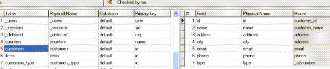

Questo capitolo espone la definizione e l’uso del repository delle tabelle.
Obiettivi
Al termine di questo capitolo il programmatore sarà in grado di:
Definire tabelle nel table repository.
Definire colonne nella tabella utilizzando i modelli.
Definire indici nella tabella.
Introduzione
Questo capitolo passa oltre la prima fase dello sviluppo dell’applicazione (definizione dei
modelli), illustrando la definizione delle tabelle nel table repository.
Per definire una Tabella nel repository devi specificare i seguenti parametri:
Nome logico della tabella
Nome fisico della tabella nel database
Nome del database in cui la tabella è contenuta
Campi della tabella (columns)
Indici della tabella (indexes)
Segmenti di ogni indice
Indice principale della tabella (primary key)
In riferimento al diagramma del database relativo all’applicazione “Il mio negozio online” precedentemente visto, il programmatore al termine di questo modulo avrà creato tutte le
tabelle richieste dall’applicazione.
0.6.1Definizione delle tabelle nel repository
Il repository delle tabelle consiste in una lista di definizioni di tabella.
La definizione di una tabella in o2architect è molto simile a quella nel database,
ma non necessariamente identica.
Il table repository in o2architect è usato per definire la struttura delle tabelle,
e non per crearle nel database. Sarà o2runtime, nel momento in cui un programma viene eseguito
ed utilizza tabelle che non esistono ancora nel database, in base alla struttura definita, a creare la
tabella nel database.
Ogni tabella è definita in modo completo per le sue colonne, per i suoi indici, e per tutte le proprietà
della tabella stessa (nome, database, indice primario).
Checkout dell’oggetto tables (F11)
Creare una nuova riga nel table repository (F4).
Digitare il nome logico della tabella nella colonna Table (stringa senza spazi)
Digitare il nome fisico della tabella nella colonna Physical name (stringa senza spazi)
Nella colonna Database premere F5 (zoom) e selezionare il
database dal repository dei database
Questa è la situazione in cui ti dovrai trovare prima di accedere alla definzione delle colonne:
0.6.2Definizione dei campi della tabella
Adesso dobbiamo definire i campi della tabella accedendo all’area destra del repository:
Creare una nuova riga del columns repository (F4).
Digitare il nome del campo nella colonna Field (stringa senza spazi).
Digitare il nome del campo nel database nella colonna Physical name (stringa
senza spazi).
F5 (zoom) e selezionare il modello dalla colonna Model.
Ripetere queste operazioni per tutti i campi della tabella.
A lavoro completato il columns repository per la tabella "Customers" dovrebbe
presentarsi così:

0.6.3Definizione degli indici della tabella
Gli indici sono chiavi che il programmatore dichiara per definire i possibili ordinamenti dei
record all’interno della tabella, in modo da presentare i valori secondo un certo orinamento e
per favorire le ricerche su tabelle con molti record.
Definire gli indici come univoci (unique), rende più affidabile l’integrità dei dati. In o2architect
ogni tabella deve avere almeno un indice e tutti gli indici dichiarati devono essere univoci. Questo
è facilmente ottenibile aggiungendo i segmenti della chiave primaria anche agli indici che per
definizione non sarebbero univoci.
Vantaggi nell’uso degli indici
Ricerche veloci: utilizzando un indice sarà più veloce la ricerca di dati tramite query basata
sui segmenti dell’indice.
Ordinamento dei dati: utilizzare un indice significa altresì ordinare i dati in base ai segmenti
dell’indice, quindi il programmatore tramite l’uso di questi indici potrà riordinare i dati a seconda
delle situazioni che gli si presentano.
Adesso dobbiamo definire gli indici della tabella accedendo all’area sottostante del
repository:
Questo elenco contiene le informazione di tutti gli indici della tabella selezionata.
Nella parte sinistra la lista degli indici contenente il nome fisico dell’indice. Nella parte destra
invece abbiamo i segmenti dell’indice selezionato, quindi i campi della tabella che determinano
l’ordinamento.
Per creare un nuovo indice per la tabella seleziona procedere come segue:
Creare una nuova riga (F4).
Digitare il nome dell’indice (stringa senza spazi).
Accedere all’area destra (segments).
Creare una nuova riga (F4).
F5 (zoom) per selezionare il campo della tabella dalla colonna Index segment.
Definire il tipo di ordinamento (Ascending o Descending).
Ripetere i punti 4-5-6 per tutti i segmenti dell’indice selezionato
0.6.4Utility per la conversione delle tabelle
Qualora il programmatore modifichi la struttura di una tabella, sia aggiungendo campi o indici,
che modificando la tipologia dei campi o i segmenti di un indice, potrebbe essere necessario un
intervento anche alla struttura della tabella fisica nel database (se la tabella è già stata creata).
Accedendo all’applicazione a runtime come utente "root" (amministratore di runtime) si avrà
disponibile il menu "root": tramite la voce di menu "tables" si avvia un utility di manutenzione delle
tabelle.
0.6.4.1Controllo (check) di tutte le tabelle
Al fine di verificare che la struttura delle tabelle definita in o2architect sia compatibile con la struttura fisica nel database, procedere premendo il pulsante Check sotto il gruppo Tables repository.
Dopo l’analisi comparirà l’esito nell’area di log:
La procedura avverte il programmatore che la tabella "items" presenta colonne nuove in o2architect che non esistono fisicamente nel database.
Adesso sarà opportuno procedere con la verifica della singola tabella "items".
0.6.4.2Controllo (check) della singola tabella
Una volta verificato che alcune tabelle presentano delle differenze tra la definizione o2 e
la definizione fisica nel database è necessario procedere con il check della singola tabella.
Selezionare la tabella da analizzare tramite il listbox in alto a sinistra e procedere premendo
il pulsante Check sotto il gruppo Single table.
Al termine dell’analisi o2runtime produce l’elenco delle differenze come segue:
0.6.4.3Azioni disponibili sulla tabella
A seguito dell’analisi prodotta da o2runtime circa la compatibilità tra la
struttura delle tabelle definita in o2architect e quella definita fisicamente nel
database in uso, il programmatore ha tutti gli strumenti per decidere quale
azione compiere.
Drop della tabella
Rebuild della tabella
Match dei campi e rebuild della tabella
Drop della tabella
Il programmatore premendo il pulsante Drop elimina la tabella dal
database. In questo modo un successivo accesso ad una funzione dell’applicazione
da parte dell’utente finale che richieda l’utilizzo di questa tabella provocherà una
creazione automatica della tabella, sulla base della struttura definita in 2architect.
E’ evidente che così facendo le eventuali differenze sparirebbero, però utilizzare
questa opzione con cautela e solamente se non esistono record nella tabella, oppure
se ritenete che i dati in essa contenuti non siano importanti.
Rebuild della tabella
Premendo il pulsante Rebuild o2runtime modifica la struttura fisica della
tabella, rendendola compatibile con quella o2 e mantenendo integri i dati in essa
contenuti.
Match dei campi e rebuild
Qualora un campo abbia variato il nome fisico è possibile associare le colonne
prima selezionandole dai listbox in basso a sinistra, poi premendo il pulsante
Match. Dopo l’associazione procedere con l’operazione Rebuild.
Esercitazione
Riepilogo
Questo capitolo ha conferito al programmatore gli strumenti necessari per completare
la seconda fase dello sviluppo di un’applicazione o2: definire tabelle nel tables repository
.
Il tables repository elenca tutte le tabelle dell’applicazione, i rispettivi campi e i
rispettivi indici.
E’ importante dare un nome significativo alle tabelle e ai campi anche in contraddizione
con il nome fisico dell’oggetto.
Dopo aver definito i campi procedere con la definizione degli indici.
Definire indici permette rapide ricerche di dati e il riordino degli stessi.
Un indice deve avere uno o più segmenti.
Dopo aver definito gli indici indicare quale è indice primario per la tabella.